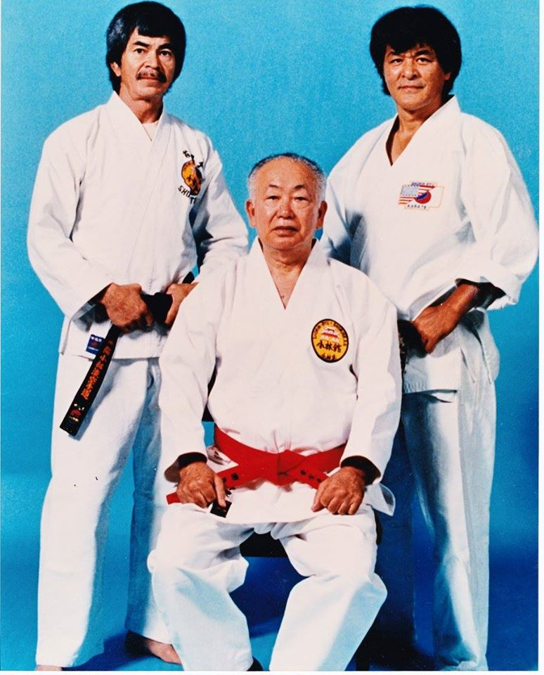

Tadashi Yamashita was born in Japan. but, he considers himself an Okinawan. His father died when he was three and his mother, who never remarried (the older Japanese did not believe in a remarriage), moved to Okinawa when Tadashi was eight years old. He lived in Okinawa until, at the age of 24, he came to the United States where he has since become a citizen.
Yamashita's experience of more than 45 years in Martial Arts began at the age of 11. The roughest kid in school, he not only picked fights with the other students, but with the teachers as well. This was brought to the
attention of the PTA which realized it could not handle him. One day, the PTA president, who was also a Karate instructor, stopped by to pick up Tadashi after school. Always the warrior. Tadashi tried to fight him. The instructor slapped the rebellious youngster and dragged him off to the dojo where he taught the elements of kicking, punching and most important of all - discipline. Tadashi found his probation period very interesting. His destructiveness was channeled into his hidden talent. The young man had discovered an art form, a religion and a way of life. Yamashita was awarded his Black Belt at the age Of 16. In 1960, he captured the All-Okinawan Shorin-Ryu Free Sparring and Kata Grand Champion Titles.
Yamashita opened a chain of karate schools in the Midwest and developed a following that has grown to than 20 dojos in the Midwest alone.
In 1968 he visited and tested before his instructor, 9th Degree Black Belt, Sensei Shuguro Nukazato. The panel also included famous Grand Master Chosin Chibana, 10th Degree Black Belt. Tadashi became the youngest 7th Degree Black Belt in Japan's history.
In 1970. on a return trip to Okinawa, Tadashi received his 5th Degree Black Belt in traditional Kobuto (Ancient Weapon Arts) from the famed master Sensei Shinpo Matayoshi.
In 1972, in search of a fuller life. Tadashi moved to Southern California. Mike Stone was one of the first Martial Arts experts to recognize Sensei Yamashita's awesome Karate and Weapons talent. The Pro-Am Tournament in Los Angeles in 1973 was the first of many in which he would demonstrate this talent. He brought spectators to their feet for a standing ovation and from moment on, the magic of his Karate Weapons genius spread throughout the Martial Arts world.
During the same year, Sensei Yamashita was featured on the television show "Thrillseekers". The show aired in Japan, and Tohe Productions contacted Yamashita and starred him in his first motion picture, "The Karate". This film was so well-received that Tohe used Yamashita in two more films, "The Blind Karate Man" and "The Karate II."
Some American films in which Yamashita has appeared are: "Enter the Dragon," "Judge Dee", "Golden Needles," "American Ninja," and "The Octagon" with Chuck Norris. Other film credits include "The Seven," many appearances on "Kung Fu," "A Man Called Sloan," and on "Knight Rider".
Yamashita is the foremost Karate and Weapons expert in the United States today, In the last decade he has taught thousands off students and produced several hundred Black Belts at Karate schools across country. He has received numerous awards. Countless titles have been bestowed upon him. He is Head instructor of Shorin-Ryu in the United States.
He is the founder of "Sui-ken-do" (way of the water fist), a devastating art that employs many strikes from different angles in rapid succession.
Yamashita has published a series of books on Karate and Kobudo training and is planning to publish more in the future.
Presently Sensei Yamashita holds the rank of 10th Degree Black Belt in both Karate and Kobudo. A unique individual, he is sought after worldwide for his Martial Arts prowess.